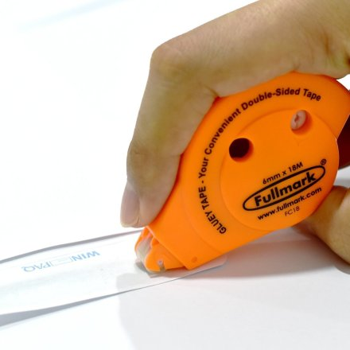

Top 10 origami tools
Tools aren’t really required for most origami, but tools can make life easier & improve the quality & precision of your final origami model. Not to mention having a few select tools can save you a lot of time, especially when it comes to cutting paper to the right size..
1. Paper Trimmer

I use one made by Cricut. It has a very useful extendable ruler, which makes it really easy to get the paper the right length without making any marks. It’s able to cut several sheets at a time. I prefer this compared to a guillotine knife, or a seperate blade and ruler.
2. Ruler

If you’re going to make an origami model a specific size, chances are you’re going to need to measure the paper! My favourite ruler is a stainless steel one with a cork backing. It stops it from slipping around.
3. Scissors
A pair of really good quality scissors makes life so much easier, cheap or blunt scissors make paper uneven or jagged. I’d suggest investing in one pair of small sharp scissors and also some nice big heavy ones for cutting straight lines. Since receiving a pair from Cricut (yes cricut again!) I have only been using these.
4. Double Sided Tape
I love using double sided tape dispensers, they are 100 times more easy to use than glue or rolls of double sided sticky tape! Contrary to popular belief, origami doesn’t exclude the use of glue. Using a tiny dab here and there can make your origami model sturdier, especially origami boxes.
5. Chopsticks
You can use a chopstick to create a curled edge, use it to round petals of an origami flower or to open a pocket that’s hard to open. Another great use is as a paper folding tool, instead of a bone folder if you don’t have one. Most people have chopsticks at home.
6. Bone Paper Folder

These folding bones are traditionally made from cow’s bones. If you don’t have strong nails, a paper folding tool will proably be very useful! I have to admit I only use mine when folding modular origami such as kusudamas or unit origami. The one in the photo can be bought online here. … A plastic one. (I got mine from one of my daughters shopkins sets!)
7. Paper Scoring Tool

This is a very recent addition to my craft tool supplies, a paper scoring tool is actually really useful. I use the scoring stylus by cricut, the one on the left is available here and another very nice looking one from fiskars
8. Paper Clips
Paper clips are always useful. When you’re making an origami Kawasaki rose, they are super helpful for the final assembly. Mini bulldog style clips or miniature pegs are also great for holding things together while folding tricky models.
9. Single Hole Punch

One of these little hole punches is really useful when you want a professional looking hole to hang your finished origami model up! This nifty tool is next on my list, I’m not sure where mine got to, until then, I’m using one end of a normal hole punch!
10. Origami Paper Storage Box
I have two of these plastic origami storage boxes, I’ve had them for years. They are the perfect size to fit the 500 paper pack by Aitoh! It’s obvious why these boxes are so useful, they prevent your origami paper from going everywhere and keep it in perfect un-crumpled condition.